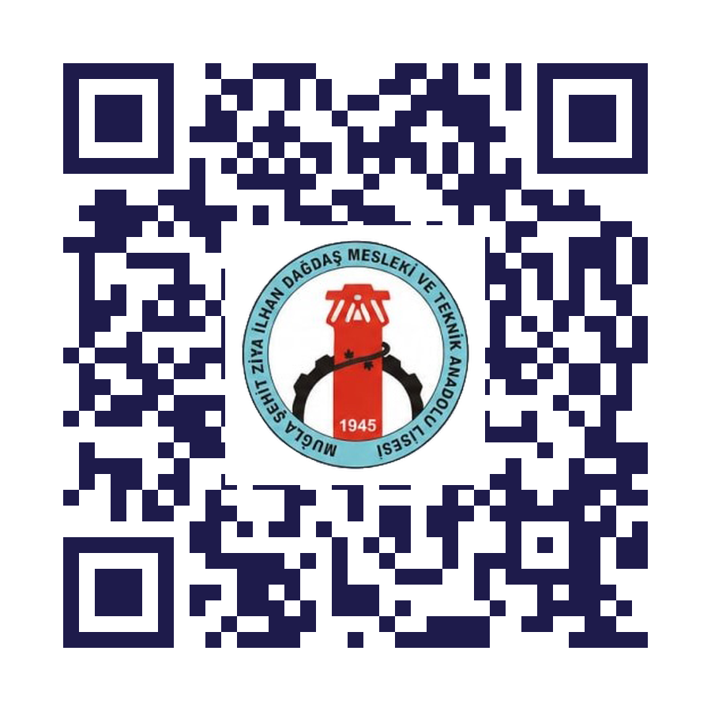

Lise kimyası, öğrencilere soyut geliyor. Periyodik tablo, atom sembolleri, kimyasal formüller — ezberle değil, oyun temelli öğrenmeyle kalıcı oluyor.
ELEMENTRA — vanilla HTML/CSS/JS ile sıfırdan yazılmış, 3 modüllü dijital öğretici oyun.
Lise 9. sınıf kimya öğrencileri (15–16 yaş). MEB müfredatı ünite 9.2 (Periyodik Tablo) ve 9.3 (Bileşikler) kazanımları kapsamında.
Kanıt-temelli oyunlaştırma. Aralıklı tekrar, anında geri bildirim ve yetkinlik-tabanlı ilerleme ile uzun süreli hatırlama hedefli.

Sergi sonrası evde devam et.
Tüm modern tarayıcılarda çalışır.
TÜBİTAK 4006
Bilim Fuarı 2025–2026
| Öğrenci | Mert Ege KAHRAMAN |
| Öğrenci | Hüseyin Efe BALCI |
| Danışman | Abdullah ÖSELMİŞ |
TÜBİTAK 4006 Bilim Fuarı
ŞEHİT ZİYA İLHAN DAĞDAŞ MESLEKİ VE TEKNİK ANADOLU LİSESİ · MUĞLA
21.05.2026
Periyodik tabloda elementi tıkla-bul. 4 farklı soru tipi ile derinleşen mekanik.
Klasik memory mekaniği. Ad ↔ sembol eşle. Latince köken bonusu (Na = Natrium).
Atomları birleştirip bileşik kur. Eksik/fazla atom analizi ile pedagojik geri bildirim.
Her modül × 4 zorluk = 12 farklı oyun deneyimi. Yıldız matrisi ile ilerleme takibi.
Kanıt-temelli pedagoji. Geleneksel ezberden öğrenci motivasyonunu ve uzun süreli hatırlamayı belirgin şekilde artırıyor.
Her modülün rozet seti. Oyun sonu en sık karıştırılan elementler + kişiselleştirilmiş öneriler ile öz değerlendirme.
Vanilla web stack. Framework yok, build yok. Tüm modern tarayıcılarda offline-ready.
Danışman: Abdullah ÖSELMİŞ
Okul: ŞEHİT ZİYA İLHAN DAĞDAŞ MTAL